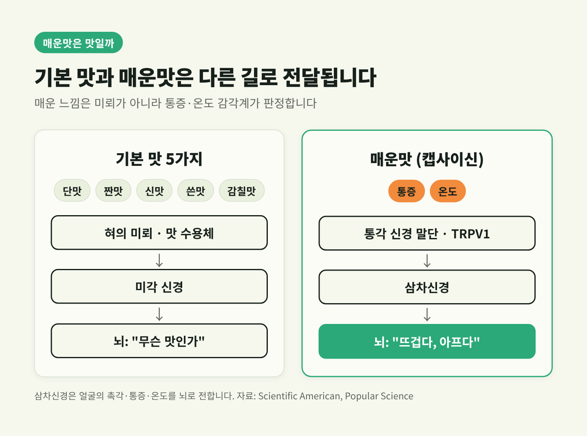
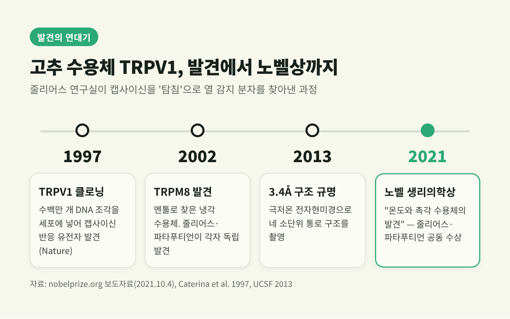
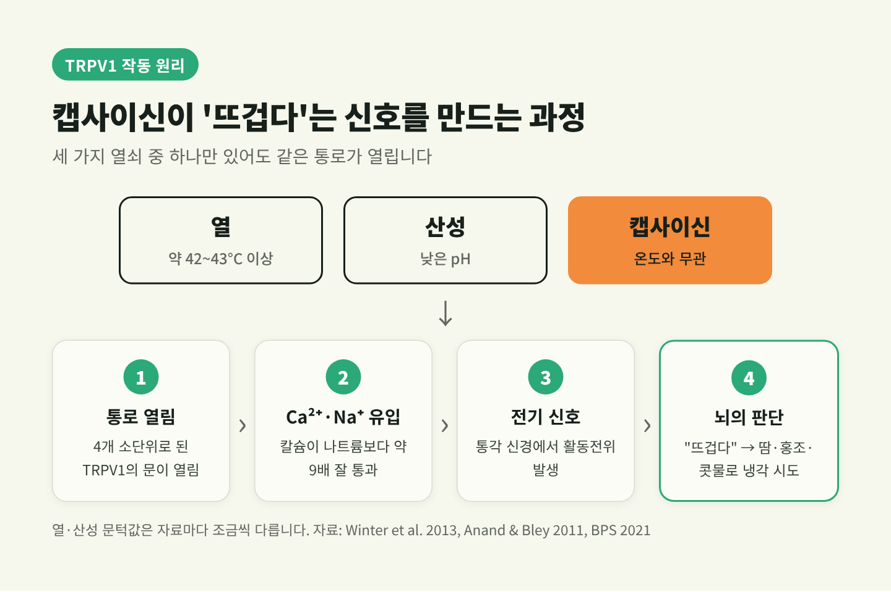
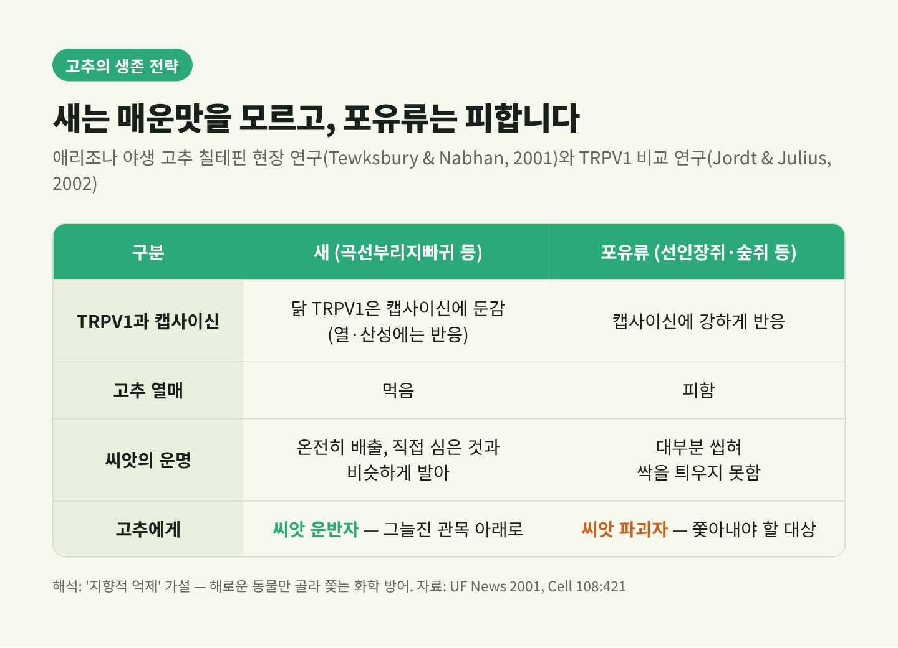
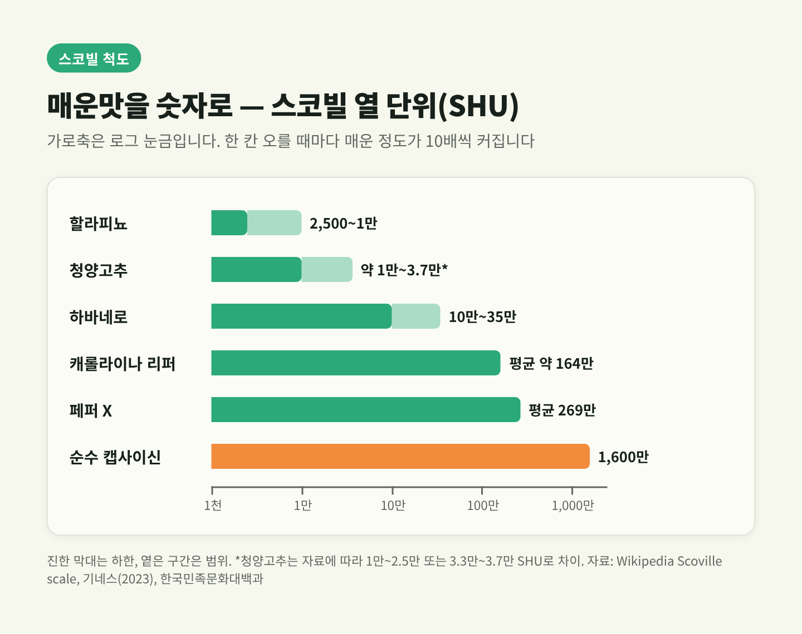
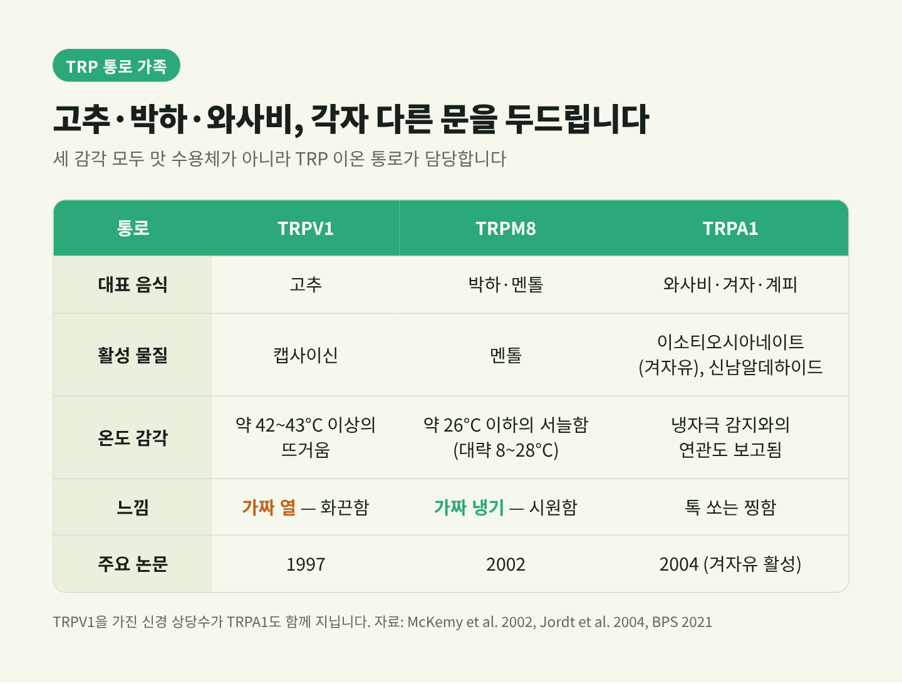

매운맛의 원리 — 캡사이신은 어떻게 TRPV1을 열어 혀를 속일까

오늘은 매운맛의 원리를 이야기해 보려 합니다. 고추를 씹으면 입안이 불붙은 듯 뜨거워지지만, 실제로 입안 온도가 오르지는 않습니다. 그 착각의 열쇠는 캡사이신과, 열을 감지하는 수용체 TRPV1에 있습니다.
먼저 결론부터 정리하겠습니다.
- 매운맛은 다섯 가지 기본 맛이 아니라 통증과 온도 감각입니다.
- 캡사이신은 약 42~43°C 이상의 열에 열리는 TRPV1 통로를 화학적으로 엽니다. 그래서 뇌는 '뜨겁다'고 판단합니다.
- 이 수용체를 찾아낸 데이비드 줄리어스는 2021년 노벨 생리의학상을 받았습니다.
■ 매운맛은 맛이 아니라 통증입니다
우리가 '맛'이라 부르는 것은 다섯 가지입니다. 단맛, 짠맛, 신맛, 쓴맛, 감칠맛입니다. 이들은 혀의 미뢰에 있는 맛 수용체가 감지합니다.
매운 느낌은 경로가 다릅니다. 얼굴의 촉각·통증·온도를 뇌로 전하는 삼차신경이 이 신호를 실어 나릅니다. 즉 매운맛은 혀가 아니라 통증 감각계가 내리는 판정입니다.
존 B. 피어스 연구소의 감각 연구자 배리 그린은 이렇게 설명합니다. 캡사이신은 극한의 열과 강한 압력에 반응하는 통각 신경을 자극합니다. 동시에 약한 따뜻함을 감지하는 신경도 건드립니다. 뇌는 '강한 자극'과 '따뜻함'을 한꺼번에 받고, 이를 화상으로 해석합니다.
흥미로운 점은 캡사이신이 조직을 실제로 태우지는 않는다는 사실입니다. 산이나 독소처럼 세포를 망가뜨리지 않습니다. 신경에 거짓 경보를 울릴 뿐입니다.

■ 1997년, 줄리어스 연구실이 찾아낸 '고추 수용체'
캡사이신이 어떤 분자를 건드리는지는 오랫동안 수수께끼였습니다. 캘리포니아대 샌프란시스코(UCSF)의 데이비드 줄리어스 연구실은 이 질문을 정면으로 파고들었습니다.
노벨위원회가 정리한 실험 과정은 이렇습니다.
- 감각신경세포에서 발현되는 유전자로 수백만 개의 DNA 조각 라이브러리를 만들었습니다.
- 원래 캡사이신에 반응하지 않는 배양세포에 이 조각들을 하나씩 넣었습니다.
- 세포 안으로 칼슘이 밀려드는지를 신호로 삼아, 캡사이신에 반응하게 된 세포를 찾았습니다.
- 오랜 탐색 끝에 단 하나의 유전자를 찾아냈습니다. 새로운 이온 통로였고, 훗날 TRPV1이라는 이름을 얻었습니다.
결과는 1997년 『네이처』에 실렸습니다. 논문 제목은 「캡사이신 수용체: 통증 경로의 열 활성 이온 통로」였습니다. 제목 그대로, 이 통로는 캡사이신뿐 아니라 통증을 일으킬 만큼 높은 온도에도 열렸습니다. 고추의 '매움'과 불의 '뜨거움'이 같은 분자 스위치를 공유한다는 사실이 드러난 순간입니다.
이후 연구는 차근차근 이어졌습니다. 2002년에는 멘톨로 냉각 수용체 TRPM8을 찾았습니다. 줄리어스와 아뎀 파타푸티언이 각자 독립적으로 해낸 일입니다. 2013년에는 극저온 전자현미경으로 TRPV1의 구조를 3.4Å 해상도로 들여다봤습니다. 그리고 2021년 10월 4일, 노벨위원회는 두 사람에게 생리의학상을 공동 수여했습니다. 업적은 "온도와 촉각 수용체의 발견"이었습니다. 파타푸티언은 촉각을 담당하는 Piezo 통로를 찾아낸 공로를 함께 인정받았습니다.

■ TRPV1은 어떻게 생겼고, 언제 열릴까
TRPV1은 세포막에 박힌 단백질 통로입니다. 똑같은 소단위 4개가 모여 하나의 통로를 이룹니다. 각 소단위는 세포막을 여섯 번 관통하고, 다섯째와 여섯째 구간 사이가 이온이 지나는 구멍이 됩니다.
이 문을 여는 열쇠는 크게 세 가지입니다.
- 열: 약 42~43°C 이상. 자료에 따라 42°C, 43°C로 조금씩 다르게 적습니다.
- 산성: pH가 낮아질 때. 기준값은 연구마다 pH 6.0 미만, 5.5 이하, 5.2 미만 등으로 차이가 있습니다.
- 캡사이신: 온도와 무관하게 화학적으로 문을 엽니다.
여러 자극이 겹치면 더 낮은 문턱에서도 열립니다. 염증이 생긴 부위가 미지근한 물에도 따가운 까닭이 여기에 있습니다.
캡사이신이 붙는 자리도 밝혀졌습니다. 결합 주머니는 세포막 안쪽에 있습니다. 캡사이신은 '꼬리는 위, 머리는 아래' 자세로 이 주머니에 끼어듭니다. 머리 부분이 통로의 연결 부위를 바깥으로 잡아당기면, 안쪽의 문이 열립니다. 흥미롭게도 열이 문을 열 때와 캡사이신이 열 때는 단백질이 움직이는 방식이 다릅니다. 같은 문이지만 열쇠 구멍이 두 개인 셈입니다.
문이 열리면 양이온이 세포 안으로 쏟아집니다. TRPV1은 칼슘을 나트륨보다 약 9배 잘 통과시킵니다. 칼슘과 나트륨이 밀려들면 신경세포의 전기 상태가 바뀌고, 활동전위가 발생합니다. 이 전기 신호가 뇌에 닿으면, 우리는 '뜨겁다, 아프다'고 느낍니다.

■ 땀이 나고 얼굴이 붉어지는 이유
뇌는 감각이 보고한 대로 움직입니다. TRPV1이 '뜨겁다'고 보고하면, 몸은 실제로 더운 상황처럼 대응합니다.
- 피부 혈관이 넓어져 얼굴이 붉어집니다.
- 땀을 내 열을 식히려 합니다.
- 코 점막이 자극물질에 과하게 반응해 콧물이 흐릅니다.
입안에서 시작된 착각이 온몸의 냉각 장치를 돌리는 셈입니다. 캡사이신의 통증 경로는 입뿐 아니라 온몸에 퍼져 있습니다. 고추를 만진 손으로 눈을 비비면 따가운 것도 같은 원리입니다.
■ 자주 먹으면 왜 덜 매울까 — 탈감작과 캡사이신 패치
매운 음식을 자주 먹는 사람은 같은 음식에 덜 괴로워합니다. 이 현상을 탈감작이라고 부릅니다.
세포 수준에서는 이렇게 설명됩니다. TRPV1이 열려 칼슘이 쌓이면, 칼슘에 반응하는 단백질들이 통로를 다시 둔하게 만듭니다. 반복해서 자극할수록 반응이 줄어드는 현상도 관찰됩니다.
사람을 대상으로 한 실험도 있습니다. 펜실베이니아 주립대 연구팀은 2024년 건강한 성인 51명을 두 그룹으로 나눴습니다. 한 그룹은 약 2주 동안 하루 두 번 캡사이신 용액(6ppm)으로 입을 헹궜습니다. 그 결과 캡사이신 그룹만 매운 정도를 유의하게 낮게 평가했습니다. 두 번째 실험에서는 캡사이신과 계피 성분의 화끈함이 각각 약 20% 줄었습니다. 반면 멘톨의 청량감이나 설탕의 단맛은 그대로였습니다.
다만 한계도 분명합니다. 혀에서 TRPV1 유전자 발현량은 줄지 않았습니다. 연구팀은 둔해지는 정확한 기전이 아직 밝혀지지 않았다고 적었습니다. 경험적으로는 몇 주 쉬면 민감도가 돌아온다고 알려져 있습니다.
이 '둔해지는 성질'은 의학에서 진통제로 쓰입니다. 미국 FDA가 승인한 8% 고농도 캡사이신 패치가 대표적입니다. 대상포진 후 신경통 환자의 아픈 부위에 한 번 60분 붙입니다. 처음에는 TRPV1이 강하게 자극돼 오히려 화끈거립니다. 이후 TRPV1을 가진 신경 말단이 줄어들면서 통증이 가라앉습니다. 효과는 임상시험에서 최대 12주까지 이어졌고, 신경이 다시 자라면 통증이 돌아올 수 있습니다. 그래서 3개월보다 자주 반복하지 않도록 정해져 있습니다.
통증을 일으키는 물질로 통증을 다스린다는 점이 역설적입니다.
■ 고추는 왜 캡사이신을 만들까 — 새는 매운맛을 모릅니다
식물이 이렇게 공들여 매운 물질을 만드는 데는 이유가 있습니다. 2001년 『네이처』에 실린 튝스버리와 내브헌의 현장 연구가 실마리를 줍니다.
연구팀은 미국 애리조나 투손 남쪽의 야생 고추 '칠테핀'을 관찰했습니다. 칠테핀은 할라피뇨와 피망 등 북미 고추 대부분의 조상으로 꼽힙니다.
- 열매를 먹으러 온 동물은 곡선부리지빠귀 같은 새뿐이었습니다.
- 선인장쥐와 숲쥐 같은 설치류는 열매를 피했습니다.
- 매운맛 없는 고추로 실험해 보니, 쥐가 먹은 씨앗은 대부분 씹혀 싹을 틔우지 못했습니다.
- 새가 먹은 씨앗은 온전히 배출돼, 직접 심은 씨앗과 비슷한 비율로 발아했습니다.
새는 주로 그늘진 관목 아래에 배설했고, 고추는 그늘에서 더 잘 자랐습니다. 씨앗을 망가뜨리는 포유류는 쫓고, 씨앗을 멀리 옮겨 주는 새는 부르는 전략입니다. 이를 '지향적 억제' 가설이라고 부릅니다.
새가 매운맛에 끄떡없는 이유는 TRPV1에 있습니다. 줄리어스 연구실은 2002년 닭의 TRPV1이 캡사이신에는 둔감하다는 것을 보였습니다. 그런데 열과 산성에는 포유류처럼 반응했습니다. 쥐 TRPV1의 특정 구간을 닭 수용체에 옮겨 붙이자, 닭 수용체도 캡사이신에 반응하기 시작했습니다. 연구팀은 캡사이신 같은 자극물질을 감지하는 능력이 포유류에서 비교적 최근에 생긴 특성이라고 해석했습니다.

■ 스코빌 척도 — 매운맛을 숫자로 재는 법
매운 정도를 재는 대표 단위는 스코빌 열 단위(SHU)입니다. 1912년 미국 약사 윌버 스코빌이 고안했습니다.
예전 방식은 사람의 혀에 의존했습니다. 말린 고추를 알코올에 녹인 뒤 설탕물로 점점 묽게 만듭니다. 5명의 시식단 중 3명 이상이 더는 맵지 않다고 할 때까지 희석합니다. 그때의 희석 배수가 곧 스코빌 수치입니다. 주관적이고 혀가 금방 지친다는 문제가 있어, 실험실 간 차이가 최대 ±50%에 이르렀습니다.
지금은 1980년대부터 쓰인 고성능 액체크로마토그래피(HPLC)로 캡사이신류 농도를 직접 측정해 환산합니다. 대략적인 수치는 다음과 같습니다.
| 대상 | 스코빌 열 단위(SHU) |
|---|---|
| 피망 | 0 |
| 할라피뇨 | 2,500~10,000 |
| 청양고추 | 약 10,000~37,000 (자료별 차이) |
| 카옌 | 25,000~50,000 |
| 하바네로 | 100,000~350,000 |
| 캐롤라이나 리퍼 | 평균 약 164만 (기네스 기준) |
| 페퍼 X | 평균 2,693,000 (2023 기네스 기록) |
| 순수 캡사이신 | 16,000,000 |
청양고추 수치는 출처마다 다릅니다. 1만~2만 5천 SHU로 적은 자료도, 3만 3천~3만 7천 SHU로 적은 자료도 있습니다. 한국민족문화대백과에 따르면 청양고추는 1983년 개발됐고, 원래 카레용 캡사이신 추출을 위해 만든 품종이었습니다. 덥고 건조한 환경에서 자라면 더 매워진다고 하니, 같은 품종도 해마다 맛이 다를 수 있습니다.

■ 멘톨은 차갑고, 와사비는 코가 찡한 이유
TRPV1에게는 친척이 있습니다. 같은 TRP 통로 가족이 각기 다른 '매운' 또는 '시원한' 감각을 맡습니다.
TRPM8 — 멘톨의 시원함 2002년 줄리어스 연구실 논문에 따르면 TRPM8은 약 26~27°C 아래에서 열리기 시작합니다. 대략 8~28°C 범위의 서늘함을 감지합니다. 멘톨은 이 문턱을 약 30°C 가까이 끌어올립니다. 그래서 박하사탕을 먹으면 입안이 실제로 차갑지 않아도 시원하게 느껴집니다. 캡사이신의 '가짜 열'과 정확히 대칭을 이루는 '가짜 냉기'입니다.
TRPA1 — 와사비와 겨자 와사비, 고추냉이, 겨자의 톡 쏘는 맛은 이소티오시아네이트라는 성분에서 나옵니다. 2004년 연구는 겨자유가 TRPA1이라는 통로를 활성화한다는 것을 밝혔습니다. 계피 성분인 신남알데하이드도 TRPA1을 자극합니다. TRPV1을 가진 신경 상당수가 TRPA1도 함께 지니고 있습니다. 고추의 매움과 와사비의 찡함이 비슷하면서도 다르게 느껴지는 이유입니다.

■ 매울 때 물보다 우유가 나은 이유
캡사이신 분자의 꼬리 부분은 물을 싫어하는 성질을 지녔습니다. 그래서 물을 마셔도 잘 씻겨 나가지 않습니다.
2019년 펜실베이니아 주립대 연구팀은 72명에게 캡사이신을 넣은 음료를 마시게 한 뒤, 일곱 가지 음료로 매운맛을 달래 보게 했습니다.
- 모든 음료가 화끈함을 어느 정도 줄였습니다.
- 가장 효과가 큰 것은 전지우유와 탈지우유, 그리고 단맛이 강한 과일맛 음료였습니다.
- 탄산수, 콜라, 무알코올 맥주 같은 탄산음료는 효과가 낮았습니다.
- 탈지우유가 전지우유만큼 효과적이었습니다.
흔히 우유의 지방이 캡사이신을 녹여 낸다고 생각합니다. 그러나 이 결과는 지방보다 단백질이 중요할 수 있음을 시사합니다. 2024년 같은 연구팀의 후속 실험에서도 단백질을 높인 우유가 일반 전지우유보다 나았고, 두유도 단백질이 많을수록 효과가 컸습니다. 우유 단백질인 카제인이 캡사이신과 결합한다는 설명이 널리 쓰이지만, 연구팀은 지방과 단백질의 기여도를 가리려면 연구가 더 필요하다고 밝혔습니다. 참고로 알코올은 오히려 화끈함을 키울 수 있다고 합니다.
■ 건강 이야기는 차분하게
매운 음식이 몸에 좋다는 이야기도, 해롭다는 이야기도 자주 들립니다. 근거의 무게를 함께 보는 편이 좋겠습니다.
중국 성인 약 48만 7천 명을 중앙값 7.2년 동안 추적한 2015년 연구가 있습니다. 거의 매일 매운 음식을 먹은 사람은 주 1회 미만으로 먹은 사람보다 사망 위험이 14% 낮았습니다. 다만 이는 관찰 연구입니다. 연구진도 직접적 인과관계는 추가 연구가 필요하다고 밝혔습니다.
반대 방향의 사례도 있습니다. 2018년 의학 저널에는 캐롤라이나 리퍼를 먹은 남성이 벼락 같은 두통과 일시적 뇌혈관 수축을 겪은 사례가 보고됐습니다. 5주 뒤 회복됐고, 단일 사례라 인과를 단정할 수는 없습니다. 그래도 극단적인 매운맛 도전에는 신중할 필요가 있다는 신호로 읽힙니다.
결국 적당한 양을 즐기되, 몸이 보내는 신호를 무시하지 않는 것이 현실적인 답입니다.
정리하면 이렇습니다. 매운맛은 혀가 아니라 통증 감각이 만든 감각입니다. 캡사이신은 열에 반응하는 TRPV1의 문을 화학적으로 열어, 뇌에 '불이 났다'는 거짓 보고를 올립니다. 그 착각 때문에 땀이 나고 얼굴이 붉어지며, 반복되면 둔해지고, 그 둔함은 진통제가 되기도 합니다.
예전엔 고추의 매움을 단순한 '맛'으로 여겼습니다. 지금은 그 안에서 체온 감지와 통증, 식물과 새의 공진화, 그리고 노벨상 연구까지 읽어 냅니다.
"매운맛은 혀가 느끼는 맛이 아니라, 신경이 믿는 온도입니다."
다음에 청양고추 한 입에 눈물이 맺힌다면, 그 순간 혀 위에서 수많은 TRPV1이 문을 열고 있다고 떠올려 보셔도 좋겠습니다.
참고자료
- The Nobel Prize in Physiology or Medicine 2021 — Press release (nobelprize.org)
- Caterina et al. (1997) The capsaicin receptor: a heat-activated ion channel in the pain pathway, Nature 389
- Winter et al. (2013) Functionally important amino acid residues in TRPV1, Molecular Pain 9:30
- British Pharmacological Society (2021) A sense of achievement: Nobel Prize-winning discoveries
- UCSF News (2013) Structure of Key Pain-Related Protein Unveiled
- RCSB PDB 3J5P — TRPV1 cryo-EM structure (Liao et al. 2013, Nature 504)
- Yang & Zheng (2017) Understand spiciness: mechanism of TRPV1 activation by capsaicin, Protein & Cell
- Anand & Bley (2011) Topical capsaicin for pain management, British Journal of Anaesthesia
- U.S. FDA — Qutenza (capsaicin 8% patch) label
- Jordt & Julius (2002) Molecular basis for species-specific sensitivity to "hot" chili peppers, Cell 108
- University of Florida News (2001) For peppers, 'hot' quite literally the spice of life
- Scientific American — Chili's Heat Deters Poor Seed Spreaders
- Scientific American — Why does eating spicy food make you sweat?
- Scoville scale (Wikipedia)
- University of Bristol — Molecule of the Month: Scoville scale
- Guinness World Records (2023) Pepper X dethrones Carolina Reaper
- 한국민족문화대백과사전 — 청양고추
- McKemy, Neuhausser & Julius (2002) Identification of a cold receptor, Nature 416
- UCSF News (2007) Why menthol feels fresh
- Jordt et al. (2004) Mustard oils and cannabinoids excite sensory nerve fibres through ANKTM1, Nature 427
- Penn State News (2019) Milk is the best drink to reduce burn from chili peppers
- Penn State News (2024) Proteins in milk, not just fat, may help reduce oral burn
- Nolden et al. (2024) Inducible desensitization to capsaicin with repeated low-dose exposure, Physiology & Behavior
- Popular Science — Spiciness isn't a taste
- Pfizer — Bodily Functions Explained: Spicy Food Reaction
- Harvard T.H. Chan School of Public Health (2015) Frequent spicy food consumption linked with lower death risk
- ScienceDaily (2018) World's hottest chili pepper may trigger thunderclap headaches (BMJ Case Reports)